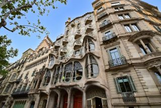
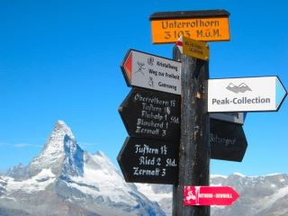

|
大分の ”マチュピチュ” らしいです‥‥
ひいき目に見ても、さすがに、少し無理があるような感じです。。。
まあ、どこにでもよくある山間部の集落！？
それでも、霧がかかると、
何気に雰囲気が出てくるように思えるから不思議です‥‥
|
 |
どこであれ、
初めて歩く
道の風景は、
新鮮でとても美しく
感じられます。
|
|
そして、
それが、
旅の途中であれば、
なおさらです。 |
 |
学生になって京都で暮らし始めた頃、取り敢えずの京都名所巡り。
でも、しばらくするとそれも日常の風景になってしまう。
そう言えば、初めて見た夜の京都タワーは、何と言うか、少し”不気味”でした。
それなのに、シルエットが東寺の”ローソク”をイメージしたものと聞いてからは、
”古都の闇”に浮き上がる”神秘的”な京都のシンボルになりました！
|
 |
|
突然ですが、 |
 |
邪馬台国は、何処だと思いますか？
近畿？ 九州？ 東遷説？ |
 |
高校の歴史の先生が言ってたことを時々思い出します。
「 宇佐神宮は、地図で見るとこんもりした丘陵地になってるだろ。
全体としては古墳なんだよ。残念だけど掘り返せないからなー。
発掘調査出来たら、”卑弥呼の墓”って分かるんだけどなー。」
生徒を笑わせるジョークだったのかもしれないけど、
邪馬台国とか卑弥呼とか耳にした時にふと思い出すのです。
地理的には九州北部に位置し、九州説の範疇と考えられないわけではないし、
先生、案外本気で思ってたかもって。打倒”箸墓古墳”。。。
|
|
| |
鎮守の森にこだまする不気味な鳴き声 |
 |
～ 鎌倉 ～ |
鎌倉のある小さな森の近くの住宅地では、ある時期の夕刻になると森の方から
何とも
不気味な唸り声のような鳴き声が聞こえてきて、住民は少し気味悪く思っていたそうです。
そこである番組の取材班が調査したところ、それはフクロウの鳴き声だと判明しました。
子育て中のフクロウは、オスが餌を取りに行きメスは巣で帰りを待つそうです。
そんな中、戻りが遅いオスに対して、メスが『餌を持って早く帰って来い！』と
帰りを促す鳴き声なんだそうです。
多少空腹の怒りの気持ちが加味されて、
少し不気味に聞こえる鳴き声になってるのかもしれません。 |
 |
 |
|
～～ スキー / 雪山 / 雪景色 ～～ |
|
 |
リフト／ゴンドラ
山間部の急斜面に沿って進む場合、
好天に恵まれた時に背後を振り返ると
本当に綺麗な雪景色が広がります。
吹雪いた時は、俯いたお地蔵さん状態で、
体に当たって落ちて脚に積もる雪を
見ながらひたすら耐えます。 |
 |
白樺／林間コース
基本緩斜面なのでゆっくり滑れます
上空から観ると優雅な感じなのですね
残念ながら、滑ってる本人には
分からないけどね‥‥ |
|
ゲレンデに流れる音楽（冬季五輪映画曲"白い恋人たち"etc）を聴きながら、
なだらかな白樺エリアを景色を見ながらゆっくり滑るのも、
きれいに整備された早朝のコースを自由に滑るのも、
コースわきの斜面に腰を下ろして雪景色に目をやって一息つくのも、
いいものです。
|
|
ひらふスキー場
蝦夷富士と称される”羊蹄山”
本当に富士山に見えませんか？
真正面に蝦夷富士を臨みながら
滑り降りることが出来ます！ |
 |
ナイタースキー
ライトアップしたゲレンデはきれいです。
天候次第では、幻想的でもあります！
滑らなくても、散歩だけでも。
ただし、防寒対策は万全に！ |
|
|
 |
地元雪国のちびっ子スキーヤーゲレンデでたまに小さい子供たちの一団と遭遇することがあります。
ある時、「キャッキャ」言いながら、コースの外れを滑っていく一団がいたので、
後ろについて滑ったのです。
整備されたコースと違ってデコボコしており、しかも、日陰だったりすると思ったより
雪がバリバリで、滑ってると、
斜度はそれ程ないのにスピードも出るし
自然と凹凸でバウンドしてバランス崩しまくりだったので途中で離脱しました。
でも、彼らにとっては、そんなスリルが楽しいのでしょうね。
「キャッキャ」言いながら楽しそうに
平然と滑ってました。
|
オールナイトスキー ／ 琵琶湖バレー
スキーで怖かった経験というと、始めて間もない頃に行った
琵琶湖バレーでの”オールナイト”スキーです。
近くて、夜だと人も少ないだろうという事だったけど、
夜間の独峰／蓬莱山をなめてはいけません。
強風とガチガチのアイスバーン。
リフトは大きく揺れるし、挙句運行停止になって、
施設内への退避を促されるし‥‥‥
ゲレンデでは、所々雪がはがれて雪面から石が覗いてるところがあり、
挙句、スキーヤーのエッジから火花がスパークしてて、
本当にびっくりするやら、怖かったりしたものです。
今では、良き思い出の一つなのですが、
昼間に行ってれば、景色は最高だったと思います！ |
|
|
初スキー時の印象がその後を左右する！？
初めてスキーに行くと、とにかく想像以上に色んな事が起こります。それでも、
また行く事になりますけどね！
ゲレンデで人と接触しそうになって、怖い思いをしたり、
リフトに乗ってるときに吹雪いてとにかく寒かったり、怖かったり、
初心者は安全のためビンディングを甘めに設定するので、
転ぶ度にスキー板が外れ、その再装着がめんどくさかったり。
ゴンドラは問題ないけど、リフトの乗り降りって初めは
上手く出来なくて、リフト停止させて恥ずかしかったり。。。
|
 |
 |
|
～～ 世界の風景 / ヨーロッパとアジア ～～
|
|
ベルリン / ドイツ |
|
ドイツビール
ドイツには大きく分けて２種類のビールがあります。
透明感のあるすっきりタイプのピルスナービールとヴァイツェンビール。
ピルスナーは、ドイツ北部で飲まれているビールで日本のビールに近いと思います。
一方、ヴァイツェンビールは、少し濁っていて香りと酸味があり色も多々あったりします。
（注：透明なクリスタルヴァイツェンビールもあります）
ドイツ南部バイエルン地方のビールで、ミュンヘンで開催される”ビール祭り”でも有名です。
日本でいうと、地ビール屋さんで飲むビールに近いと個人的には思っています。
私は、ピルスナーの”ドルトムントビアー”がお薦めです。
|
普段普通のビールグラスで飲んでます。
お土産用なのかな？ 伝統工芸品？ |
 |
 |
伝統料理
アイスバインとザワークラウト
茹でた豚足料理とキャベツの酢漬け
苦手な食べ物です。 |
 |
”バドワイザー” と ” ブドワイザー”
読み方は違いますが、共に "Budweiser"のことです。
もともとはチェコのビールでブドワイザーが本家だそうです。
バドワイザーは米国のライトビール（商標権獲得？）なんですが、
ブドワイザーはアルコール量が高く（6-7%?）、コクのあるビールです。
機会があれば是非お試しください。
|
|
博物館群／ベルリン
博物館、美術館が群を成すように
建っている地域があります。
しかも、定期的に市民に無料開放され、
館内カフェテリアで昼食とか、
すごくないですか！ |
 |
ブルスト／ソーセージ
”白いソーセージ”（ヴァイスブルスト）、街中の”屋台”で買えます。
スープと同じように、頼むとパンも一緒に付いてきます！美味！
”ブラッドブルスト”もお薦めらしいです。その名の通り、血のソーセージです。
私には、無理です。 |
|
|
|
 |
～～ ヨーロッパの街並み ～～ |
|
バルセロナ / スペイン
街中は、人が歩いていなければ(!?)、
日本とそんなに変わらないと思うけど |
|
個人的な感覚なのですが、
花を目にする機会が格段に多い！
家、庭、公園、ショップ。。。

歴史がある都市の建築物は、
京都のように存在感がありますよね。。
教会、行政施設、病院、学校etc。。。 |
|
|
|
 |
ライデン／オランダ
標高が極めて低い国土のオランダは、河川が多いイメージがあります。
そんな中、ライデンは、古い街並みを残したきれいな城下町です。 |
|
|
|
|
～～ アルプスの山々 ～～
スイス |
|
ユングフラウヨッホ駅
世界で最も高いところにある鉄道駅です。
標高4000メートルぐらい。 |
|
展望台から眺めた氷河です。
直接テラスへも出ることが出来ます。
少し息苦しくなりますが。。

ユングフラウは、
マッターホルンと並び称される
美しく人気のある山です。 |
|
|
|
|
アルプスと聞いて思うもの
ツェルマットとインターラーケン
アルプスの少女ハイジ
そして
エーデルワイス
|
 |
|